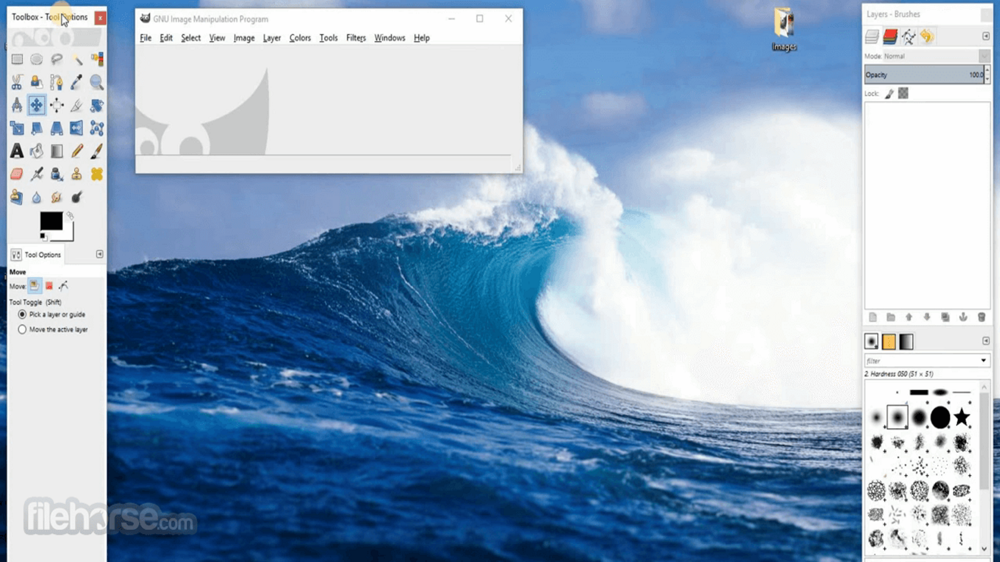
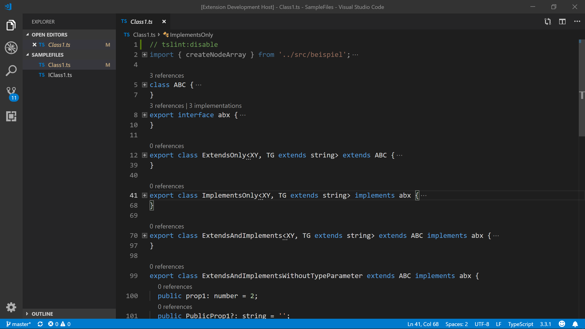

Version 22.01.12
The latest version of the simple, elegant desktop BSD operating system is now available. Install it on your computer today! Release notes

Our elegant MATE desktop environment.

Unleash your creativity with GIMP.

VSCode, Microsofts IDE.